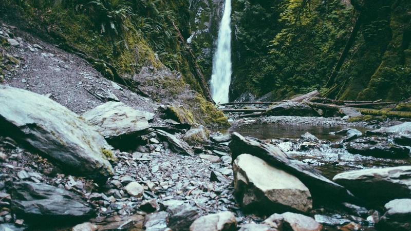

April 15, 2026
Community Center Renovation Complete: Grand Reopening This Weekend
After months of hard work and community fundraising, the historic Maple Street Community Center unveils its new facilities. The renovation includes a modern media lab, expanded kitchen, and accessible entrances. Join us Saturday for a block party celebration from 10am to 4pm with live music, food trucks, and guided tours.
- New digital media studio for youth programs
- Energy-efficient upgrades reduce carbon footprint
- Community garden expansion at the rear lot